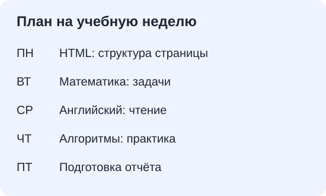

13 сентября 2026
На этой неделе
Демонстрационный список из предыдущих работ. Данные вымышлены: состояние задач зафиксировано на .
- Всего задач
- 10
- Выполнено
- 02
- Просрочено
- 01
Четыре предмета
- Web-технологии
- Математика
- Английский язык
- Алгоритмы
Учебные задачи
Те же десять задач, теперь в карточках. Состояния зафиксированы на 13.09.2026; переключатель ниже меняет только плотность списка.
-
Web-технологии
Разметить страницу планировщика
-
Математика
Решить задачи по матрицам
-
Web-технологии
Добавить форму учебной задачи
-
Английский язык
Прочитать текст о технологиях
-
Алгоритмы
Разобрать линейный поиск
-
Математика
Подготовить примеры производных
-
Web-технологии
Оформить карточки задач
-
Английский язык
Повторить технические термины
-
Алгоритмы
Сравнить способы сортировки
-
Web-технологии
Собрать отчёт по HTML
Добавим задачу?
Пока это проверка формы: заполните обязательные поля. Откроется страница результата, но задача не сохранится.
Из чего складывается размер карточки
У обеих карточек задана ширина 160 px, padding 16 px, border 4 px и margin 8 px. Меняется только box-sizing.
content-boxПо внешнему краю рамки: 200 px160 px
border-boxПо внешнему краю рамки: 160 px120 px
В content-box к ширине контента прибавляются внутренние отступы и рамка: 160 + 32 + 8 = 200 px. В border-box они уже входят в 160 px. Внешний отступ margin в эту ширину не входит ни в одном варианте.
План на пять дней
